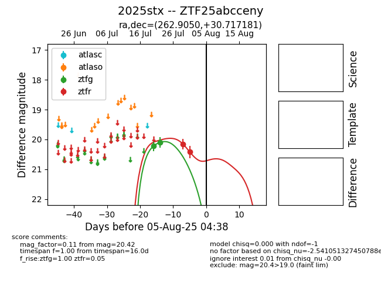

Target 2025stx at 2025-08-05 04:38, see:
FINK: fink-portal.org/2025stx
Lasair: lasair-ztf.lsst.ac.uk/objects/2025stx
ALeRCE: alerce.online/object/2025stx
TNS: wis-tns.org/object/2025stx
YSE: ziggy.ucolick.org/yse/transient_detail/2025stx
alt names
ZTF25abcceny (ztf,fink)
2025stx (tns,yse)
coordinates:
equatorial (ra, dec) = (262.9050,+30.71718)
galactic (l, b) = (54.5859,+29.60598)
photometry
last ztfg=20.10, ztfr=20.42
2 ztfg, 2 ztfr detections
